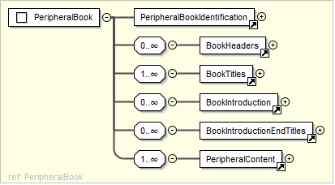
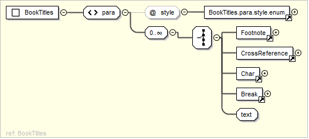
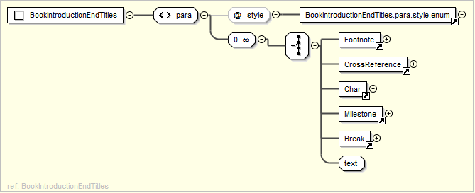

Document Structure¶
A USX document consists of valid elements for either Scripture or Peripheral types organized within a sequence of document divisions.

Scripture¶

- Book Identification *
- Book Headers
- Book Titles * +
- Book Introduction
- Book Introduction End Titles
- Book Chapter Label
- Chapter Content * +
* = required ; + = one or more
Peripheral¶
A USX document containing peripheral content will be either:
- a document containing content for a single peripheral book (Concordance, Glossary, Topical Index, Names Index), or
- a document containing content for a division (sub-section) of peripheral content from a larger book (Front Matter, Introductions, Back Matter, Other)
 See: Peripherals for additional information on peripheral content organization.
See: Peripherals for additional information on peripheral content organization.

Peripheral Book¶


Book Headers¶

An optional collection of one or more para elements for providing vernacular book name and abbreviation texts.
Book Titles¶
A collection of one or more para elements for book main titles.
- Valid @style types (alphabetical): imt, imt1, imt2, mt, mt1, mt2, mt3, mt4, rem
- Optional collection of one or more child elements (may be nested): note (@style f, fe, x), char, optbreak
Book Introduction¶

An optional collection of para or table elements for book introductions.
- Valid @style types (alphabetical): ib, ie, iex, ili, ili1, ili2, im, imi, imq, imt, imt1, imt2, imt3, imt4, imte, imte1, imte2, io, io1, io2, io3, io4, iot, ip, ipi, ipq, ipr, iq, iq1, iq2, iq3, is, is1, is2, rem
- Optional collection of one or more child elements: note (@style f, fe, x), ref, char, ms, figure
Book Introduction End Titles¶
An optional collection of para elements for book titles occurring at the end of the book introduction.
- Valid @style types (alphabetical): imt, imt1, imt2, mt, mt1, mt2, mt3, mt4
- Optional collection of one or more child elements: note (@style f, fe, x), ref, char, ms, optbreak
Book Chapter Label¶

An optional para element for a chapter heading text which could be applied (typically as a heading) to all chapters in the current book.
- Valid @style types: cl
Chapter Content¶

An optional collection of chapter, para, table, or sidebar elements for the main content of a scripture book.
- Valid para @style types (alphabetical): imt1, b, cd, cl, cls, cp, d, iex, ip, k1, k2, lf, lh, li, li1, li2, li3, li4, lim, lim1, lim2, lim3, lim4, lit, m, mi, mr, ms, ms1, ms2, ms3, mte, mte1, mte2, p, p, p1, p2, pc, pi, pi1, pi2, pi3, pm, pmc, pmo, pmr, po, q, q1, q2, q3, q4, qa, qc, qd, qm, qm1, qm2, qm3, qr, r, rem, restore, s, s1, s2, s3, s4, sd, sd1, sd2, sd3, sd4, sp, sr
- Optional collection of one or more child elements: note (@style f, fe, ef, x, ex), ref, char, ms, figure, verse, optbreak
Peripheral Content¶

An optional collection of chapter, para, table, or sidebar elements for the main content of a scripture book.
- Valid para @style types (alphabetical): imt1, b, cd, cl, cls, cp, d, iex, ip, k1, k2, lf, lh, li, li1, li2, li3, li4, lim, lim1, lim2, lim3, lim4, lit, m, mi, mr, ms, ms1, ms2, ms3, mte, mte1, mte2, p, p, p1, p2, pc, pi, pi1, pi2, pi3, pm, pmc, pmo, pmr, po, q, q1, q2, q3, q4, qa, qc, qd, qm, qm1, qm2, qm3, qr, r, rem, restore, s, s1, s2, s3, s4, sd, sd1, sd2, sd3, sd4, sp, sr
- Optional collection of one or more child elements: note (@style f, fe, ef, x, ex), ref, char, ms, figure, verse, optbreak